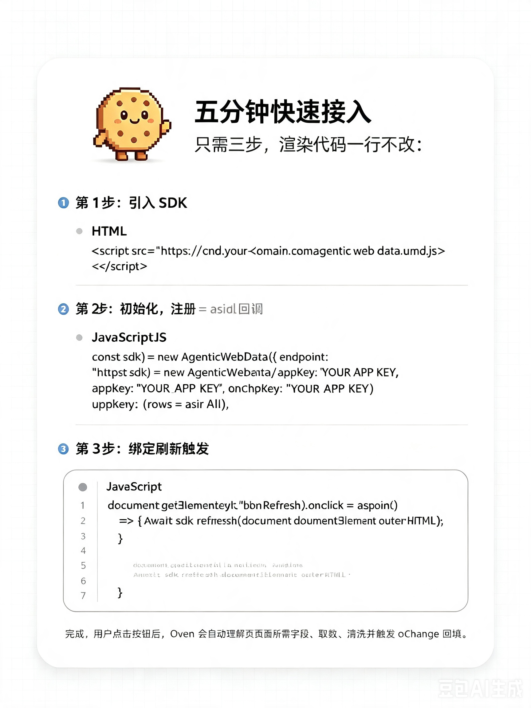

最懂业务的人亲手搭建业务页面，不等产研排期
一人公司 / 超级个体，一个人就是一支产品团队
用 AI 快速验证创意，把想法做成能跑的产品
outerHTML 就是需求文档——不需要 PRD、不需要接口文档，Agent 读页面就知道要什么数据
慢链路学习一次即固化缓存，快链路复用计划毫秒响应，LLM 成本趋近于零
不动一行渲染代码，一行 <script> 接入，老页面原地升级
每个 Agent 产物都要过监管者质检 + 四层护栏，智能绝不以失控为代价
sdk.refresh(outerHTML) 一个 API 完成全部接入——前端改造从「人天」变「分钟」，渲染层零改动
需求分析 Agent 读页面快照自动产字段映射——页面长什么样，数据就配成什么样
监管者统筹质检，分析 Agent 上游纯分析、执行 Agent 下游自动选 Tool——每步可核验、可回退
MCP-A 接外部 API，MCP-B 通吃结构化 + 非结构化数据库——新增数据源，Agent 零改动
学习走慢链路（LLM），执行走快链路（缓存计划直调）——日常刷新毫秒级，无 LLM 推理开销
MongoDB
非结构化文档接入
MongoDB
内容型长文本页面
PubChem
外部开放 API · MCP-A
MySQL
结构化数据库 · MCP-B
Workday
企业级 SaaS API
触发刷新 · 接收回填 · 渲染零改动
脱敏快照 · 共享内存 · onChange 广播
派发 · 并行编排 · 逐节点质检
上游：产字段映射，不调工具
含 LLM，经 MCP-A 取数
含 LLM，经 MCP-B 读写
tool：callExternalAPI · resource：API schema
tool：SQL 函数 + search/get/put · resource：表 + 集合 schema
PubChem · Workday · REST/GraphQL
MySQL / PostgreSQL
MongoDB / ES / 对象存储
① 监管者查缓存 ② 数据需求分析 子 Agent 纯分析产字段映射（不调工具）③ 映射下传，接口调用 / 数据库操作 子 Agent LLM 首次选 Tool 产调用计划 ④ 生成清洗脚本 → 质检 → 沙箱校验 → 人工审核 ⑤「映射 + 计划 + 脚本」固化 Redis
① 缓存命中，并行派发接口调用 / 数据库操作 子 Agent ② 复用缓存计划：MCP-A 取外部数 / MCP-B 读写库 ③ 汇总 → 缓存脚本沙箱清洗 → schema 校验 ④ 监管者终检 → onChange → renderAll 回填
面向不同 B 端用户，由 FDE 与售前工程师提供场景化解决方案，把 Oven 送进每一个业务现场。
深入业务现场，把 Oven 接到真实数据源与真实页面
面向不同 B 端用户，提供场景化解决方案